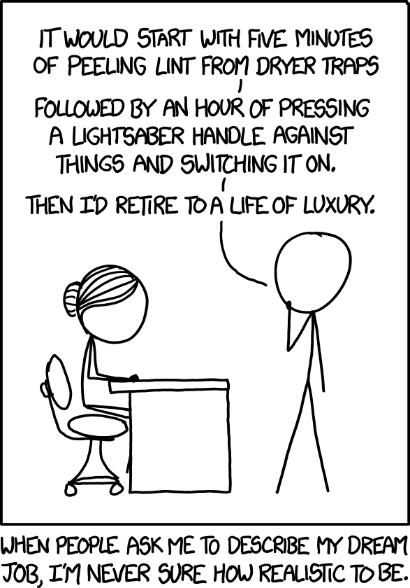

Working at Amazon
I found a new job
TL;DR: I’ve got a new job working for Amazon, in
the “Open Source Program Office”. I’m now an Amazoner!
More information below…
 |
| The Amazon. Source: https://en.wikipedia.org/wiki/Amazon_rainforest |
Background:
A little over three months ago, I decided to get back into full-time work. For the past 2.5 years since I left my job at Red Hat, I’ve been mostly working full-time on Mgmt Config and my DevOps/SWE Mentoring Program. To do such things, I had to live off of my savings, which isn’t sustainable long-term. I am thankful that I was able to do so for so long. It was time to dive back in, and here I am.
My patrons:
As an experiment, I had previously decided to try collecting donations through
Patreon and GitHub Sponsors
to fund my work on mgmt full-time. I was, and am, extremely flattered and
humbled that so many of you contributed. While your donations were extremely
generous, they weren’t enough for me to live off of indefinitely.
Since I’ll now have a full-time, paying job, I’ll be notifying all my patrons of
this and I offer them the chance to suspend their donations. Any money that
patrons continue to donate, will be funneled directly into the mgmt project.
This money will go towards stickers/swag, development expenses, conference
speaking expenses, or for any other relevant expense that you’d like to suggest.
What about mgmt?
Some great news here! As a condition of joining, I got a personalized exemption
so that I am allowed to continue working on mgmt in my personal time! I expect
I’ll surely be quite busy at work, but I hope to spend many evenings and
weekends maintaining the project and getting it closer to a 0.1 release.
There are a few tough blockers and bugs that need addressing for it to really
shine. I’ve been able to use mgmt in production, but it’s the fancy,
real-world use-cases that need to be publicly demonstrated. I need help from
people who are strong at golang and compilers. If you can help out here, please
contact me.
I hope more of you step up and contribute some code to the project. I’ll be around if you want help finding issues to work on, a review of your patches with some optional mentoring, or just a friendly chat about the future of automation.
|  |
| I added this comic to make this post more entertaining! Source: https://xkcd.com/1346/ |
{kind=link}
My work:
From what I know so far, I think that I’ve joined a properly bespoke team! I hear that it is filled with many nice and bright souls, and some great leadership. I’ve only met a fraction of the org, and I know even less about what I’ll exactly be working on and/or if I’m even allowed to talk about it, but I think there will be some fun challenges ahead, and I hope to help make some positive contributions both inside, and outside of Amazon. I hope to help set the tone, direction and strategy for Amazon’s open source policy and interaction with the rest of the Linux, GNU, and Free Software community. Wish me luck!
Criticism:
I told a few friends about this news shortly before this blog post was published and I even got teased a little bit because of Amazon’s reputation. It’s no secret that Amazon has received a fair bit of criticism in the news. They’re a behemoth that powers a great deal of the internet, and is involved in an impressively large volume of online shopping. No company this big could ever be without criticism.
I’m not being hired as a spokesperson, but if I’m given the permission to speak honestly and transparently, I’ll welcome any fair criticism and speak to it whenever I can. My personal opinion here is that it’s much more effective to try to make positive change from within, and hopefully you’ll trust that I’m doing as much as I can.
Other offers:
Since I announced that I was available for hire, I had a number of really great folks reach out. I was particularly sad that I had to turn down so many great offers, but I truly enjoyed meeting and nerding out with many talented individuals out there. I’ll remember who you are, and I hope we’ll work together some day. Job hunting was a great way for me to find out which companies have great talent and healthy cultures.
Thanks:
I am incredibly thankful that I had such a great network to get the word out, to bounce ideas off of, and to ask questions to. To everyone that helped me out, you know who you are, and thank you again! Thanks to those that gave me career advice, salary advice, legal advice, and especially to my new team for hiring me! I wish I had these connections going into all of my past jobs. If I can do the same for any of my internet friends, please let me know.
Postscript:
Amazon has a process that lets you pick your username! This is one of the first
things I look for in a healthy nerd culture. bezos@amazon was not available,
but I still ended up getting something good! Sadly, usernames are limited to
eight characters instead of ten. Still, this is better than at Red Hat who
reneged on assigning me purpleidea. ;)
Happy hacking,
James
December 28, 2020
890 words
Categories
Tags
amazon james open source mgmtconfig planetfedora purpleidea